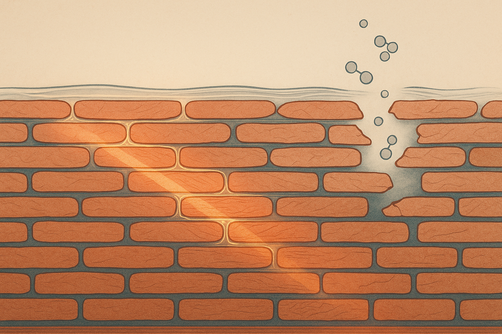
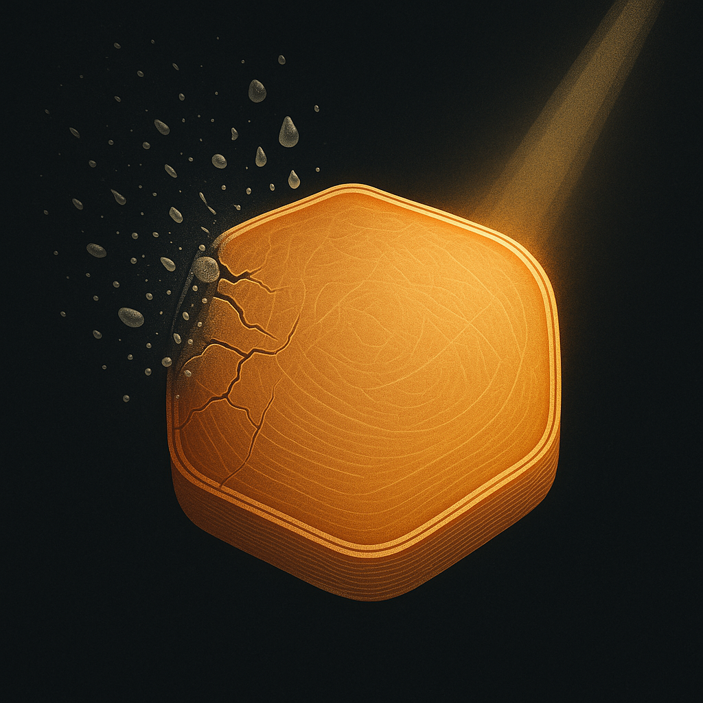
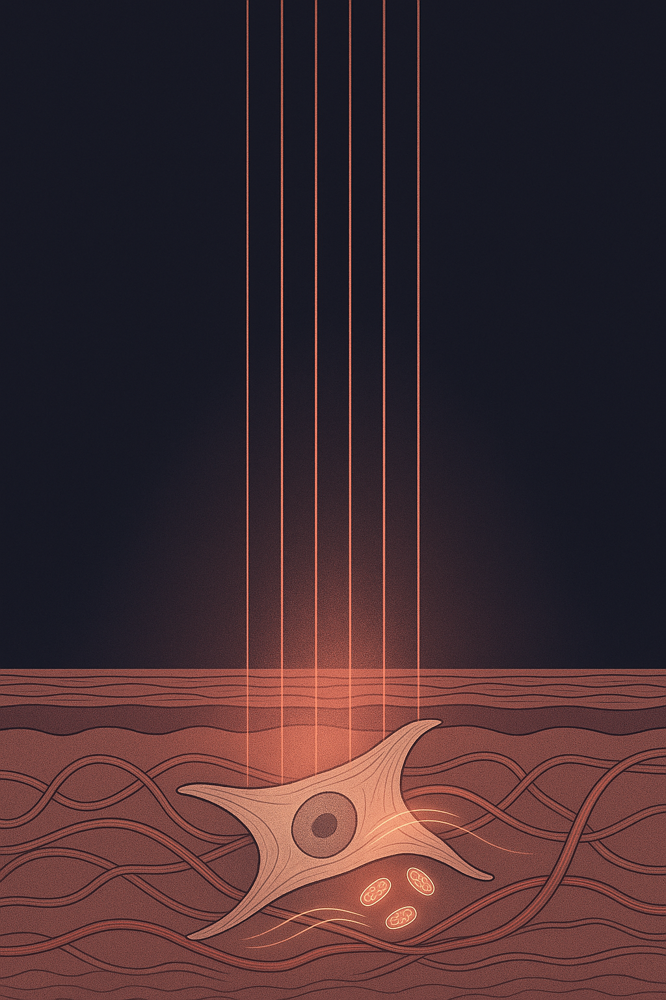

Review below. Reply approve to publish the Facebook post, or tell me edits.

There is a quiet trend building in 2026, and for once it is not a new ingredient or a ten-step ritual. It is subtraction. Skinimalism, under-consumption, barrier-safe routines: different names for the same idea. Use less, choose better, and stop asking your skin to recover from the very things you are doing to it.
If you have ever added a product to "fix" tightness or redness, only to watch it get worse, this is for you. Because the most common self-inflicted skin problem right now is not neglect. It is over-treatment.
Picture a brick wall. The bricks are your skin cells (corneocytes), and the mortar between them is a blend of lipids: ceramides, cholesterol, fatty acids. That wall is your barrier. When the mortar is intact, water stays in, irritants stay out, and skin looks calm and even.
Now imagine going at that wall with a wire brush every night. Acids on Monday, a retinoid on Tuesday, a scrub on Wednesday, another active layered on top. Each step on its own can be reasonable. Stacked without pause, they strip the mortar faster than skin can rebuild it. The wall gets leaky. Water escapes, irritants get in, and the result is the opposite of the goal: tightness, stinging, redness, dullness, and often more breakouts, not fewer.
The fix, more often than not, is not another product. It is removing a few.
A stressed barrier tends to announce itself quietly before it shouts. Some honest signs to read:
If two or more of those sound familiar, the useful experiment is not to buy something. It is to take something away and give the wall a fortnight to rebuild.
Most routines can shed a surprising amount and lose nothing. The non-negotiables (the steps that actually carry a routine) are short:
Everything else is optional and dose-dependent. That does not mean actives are bad. It means they cost something.
Here is a distinction worth keeping. An active step does chemical work on the skin: an acid, a retinoid, a strong vitamin C. It has a dose ceiling and an irritation cost. Do too much, too often, and you pay for it at the barrier.
A passive step adds no ingredient load at all. It does not compete for room on the skin, does not stack acid on acid, does not abrade. When you are simplifying, passive steps are the ones that rarely make things worse.
This is where light is genuinely unusual. The proper name is photobiomodulation. Stripped of the jargon, it means certain visible wavelengths of light can gently nudge skin cells. What matters for a pared-back routine is the mechanics of why it is low-risk.
There is no ingredient to layer. No acid load. No abrasion. And no thermal threshold to worry about at these intensities. That combination is rare. The realistic worst case is a transient flush that settles, which is exactly why a light step can slot into a simpler routine without becoming one more thing that irritates an already-tender barrier.
For the sake of one accurate mention: the Redermis mask uses seven LED colours built from three primaries (red at 630 nm, green at 520 nm, blue at 460 nm), across 70 chips on the face piece and 33 on the neck band, for 309 emission points in total. The session is ten minutes, hands-free. Ten passive minutes, no product added. That is the whole appeal in a subtraction-minded routine: it asks nothing of your barrier while you sit still.
None of this is magic, and pretending otherwise would insult you. A light step does not repair an already-damaged barrier overnight. It does not replace your sunscreen, your moisturiser, or a dermatologist if something needs real attention. And it adds nothing if the actual fix is simply stopping the over-exfoliation. If you are stripping your skin every night, the most useful thing you can do is stop, not add a device on top.
This is a cosmetic device, not a medical one. And Redermis is a new Australian brand still earning its reviews. We are not inventing any, and we would rather you judged us slowly than trusted us quickly.
The better frame for all of this is skin longevity: consistency over intensity. A calm, well-supported barrier ages more gracefully than one you keep breaking and rebuilding. Doing less, on purpose, is often the kindest thing you can do for it.
If you want a closer look at the mask and its full spec, it is here. As an Australian brand with local fulfilment, your usual consumer rights under the ACL apply, so you can take your time deciding.

If your skin is playing up, the answer might be fewer products, not more.
You know the pattern. The shelf keeps growing. Acid one night, retinol the next, a scrub, three serums. And somehow skin gets tighter, redder and more reactive instead of better.
Here is the plain version. Think of your skin's surface like a brick wall. The cells are the bricks, the lipids that hold water in are the mortar. Over-exfoliate and you knock the mortar out, so everything stings and dries.
Worth separating two things. Some steps do active chemical work and carry a real irritation cost: acids, retinoids, scrubs. A couple are passive and add no load.
Light is the odd one out. No ingredient to layer, no acid, no abrasion, no heat. So it can sit in a simpler routine without being one more thing to irritate the barrier.
We are Redermis, an Australian brand making one thing, a face and neck light-therapy mask.
Honest bit: light will not undo a barrier you have already over-stripped, and it does not replace your moisturiser or your sunscreen. If you are irritated, the first move is taking things away, not adding a device. Cosmetic device, not medical.
What did you cut from your routine that your skin didn't miss?
If you want a closer look, the mask and full spec are here: https://redermis.com.au/products/medical-grade-silicone-7-wevelenghts-photon-led-mask-face-and-neck-red-light-therapy-flexible-facial-mask-repair-skin-wireless-use
Hashtags: #skinbarrier #skincaresimplified #lessismore #redlighttherapy
IMAGE PROMPT: Editorial science illustration in the style of Scientific American and Quanta, structured and legible, no product, no device, no person, no text. A clean cross-section diagram of the skin's outer barrier drawn as a brick-wall metaphor: neat rows of rounded cell "bricks" bonded by luminous lipid "mortar" between them. On the left side, an intact, orderly wall with the mortar glowing softly and a thin layer indicating retained moisture above it. On the right side, the same wall with mortar eroded and gaps opening between bricks, water escaping upward as small stylised droplets to show barrier loss. A single restrained beam of warm light rests gently over the intact section as a passive, non-abrasive element (no gadget, purely a light-ray diagram). Muted editorial palette: deep charcoal background, warm amber and soft red light accents, cream and pale gold linework. Flat vector-illustration feel, precise, intelligent, calm, generous negative space.

Doing less can be the upgrade.
Fewer actives. Less irritation. One passive step.
Over-treating strips the barrier, the lipid "mortar" that holds your skin cells together. Pile on more product and you can end up with more redness and reactivity, not better skin.
The honest fix is usually subtraction. Keep the essentials: cleanse, moisturise, SPF. Let the rest go.
Light is a different kind of step. No ingredient load, no acid, no scrub, no heat. That is photobiomodulation, a plain way of saying certain wavelengths gently nudge skin cells, and it slots into a pared-back routine without asking anything of your barrier.
Consistency over intensity. Ten hands-free minutes. Skin longevity, not a war on wrinkles.
Honest limit: it will not fix an already-stripped barrier, and it does not replace sunscreen.
Redermis, an Australian light-therapy mask, still earning our reviews honestly.
Closer look? Link in bio.
Hashtags: #skinbarrier #skinimalism #skinlongevity #redlighttherapy #ledmask #skincaretips #lessismore #skinhealth #australianskincare #gentleskincare #skincareroutine #glassskin
IMAGE PROMPT: Vertical editorial science illustration in the style of Scientific American, New Scientist and Quanta: intelligent, structured, legible, flat vector-and-fine-line style, restrained palette of warm terracotta, deep charcoal and soft cream with a single quiet red accent. Subject is a clean cross-section of the skin barrier rendered as a classic "brick and mortar" science diagram: neat rows of rounded skin-cell "bricks" held together by a glowing lipid "mortar" between them, drawn as flowing layered strata. On the left half, the mortar is intact and continuous, cells sitting orderly and calm. On the right half, an overload of tiny scrubbing particles, acid droplets and stacked product layers has fractured the mortar, leaving gaps and small stress lines between the cells, a visual metaphor for over-treating and barrier disruption. From the top, a set of soft parallel light shafts descends as thin diagrammatic wavelength lines and gently rests on the calm intact side, adding nothing to the strata, no particles, no heat marks, just quiet illumination. Elegant fine linework, subtle grain, generous negative space, a single conceptual metaphor for "doing less protects the barrier". Absolutely no product, no face mask, no LED device, no gadget or technology, no person, no face, no text, no numbers, no logos.
Title: Minimalist Skincare Routine: Why Doing Less (Plus 10 Minutes of Red Light) Is Kinder to Skin
Description: A bigger routine is not always a better one. Every new active you layer on is another chance to disrupt your skin barrier, and over-cleansing plus too many exfoliants often shows up as redness and sensitivity. This is where red light therapy at home fits quietly: an LED face mask is passive, so ten minutes a day supports your skin without adding another thing to irritate it. Fewer, gentler steps, done consistently, tend to beat a crowded shelf.
If you want a closer look at the mask and its full spec, it is here: https://redermis.com.au/products/medical-grade-silicone-7-wevelenghts-photon-led-mask-face-and-neck-red-light-therapy-flexible-facial-mask-repair-skin-wireless-use
Hashtags: #redlighttherapy #ledfacemask #skinbarrier #minimalistskincare #skincareroutine
Note: This pin reuses the Instagram image.